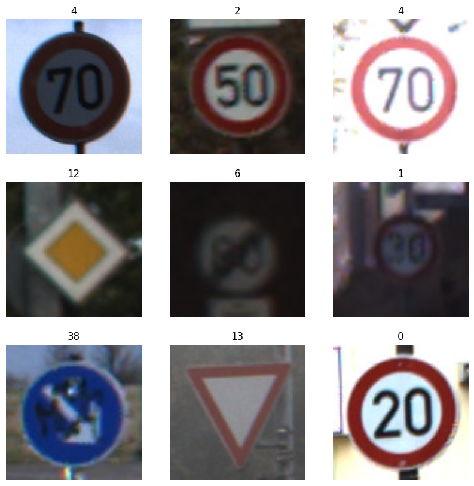

# Note: After you run this cell, the training and test data will be available in# the file browser. (Click the folder icon on the left to view it)## If you don't see the data after the cell completes, click the refresh button# in the file browser (folder icon with circular arrow)# First, let's download and unzip the data!echo "Downloading files..."!wget -q https://github.com/byui-cse/cse450-course/raw/master/data/roadsigns/training1.zip!wget -q https://github.com/byui-cse/cse450-course/raw/master/data/roadsigns/training2.zip!wget -q https://github.com/byui-cse/cse450-course/raw/master/data/roadsigns/holdout.zip!wget -q https://github.com/byui-cse/cse450-course/raw/master/data/roadsigns/mini_holdout.zip!wget -q https://github.com/byui-cse/cse450-course/raw/master/data/roadsigns/mini_holdout_answers.csv!echo "Unzipping files..."!unzip -q /content/training1.zip!unzip -q /content/training2.zip!unzip -q /content/holdout.zip!unzip -q /content/mini_holdout.zip# Combine the two traning directories!echo "Merging training data..."!mkdir /content/training!mv /content/training1/*/content/training!mv /content/training2/*/content/training# Cleanup!echo "Cleaning up..."!rmdir /content/training1!rmdir /content/training2!rm training1.zip!rm training2.zip!rm holdout.zip!rm mini_holdout.zip!echo "Data ready."
Downloading files...
Unzipping files...
Merging training data...
Cleaning up...
Data ready.
Code
# Import librariesimport pandas as pdimport tensorflow as tffrom tensorflow import kerasfrom tensorflow.keras.preprocessing.image import ImageDataGeneratorimport matplotlib.pyplot as pltimport numpy as np
Code
# We're using keras' ImageDataGenerator class to load our image data.# See (https://keras.io/api/preprocessing/image/#imagedatagenerator-class) for details## A couple of things to note:# 1. We're specifying a number for the seed, so we'll always get the same shuffle and split of our images.# 2. Class names are inferred automatically from the image subdirectory names.# 3. We're splitting the training data into 80% training, 20% validation.training_dir ='/content/training/'image_size = (100, 100)# Split up the training data images into training and validations sets# We'll use and ImageDataGenerator to do the splits# ImageDataGenerator can also be used to do preprocessing and agumentation on the files as can be seen with rescaletrain_datagen = ImageDataGenerator( rescale=1./255, validation_split=.2 )validation_datagen = ImageDataGenerator( rescale=1./255, validation_split=.2 )train_generator = train_datagen.flow_from_directory( training_dir, target_size = image_size, subset="training", batch_size=32, class_mode='sparse', seed=42,shuffle=True)validation_generator = validation_datagen.flow_from_directory( training_dir, target_size=image_size, batch_size=32, class_mode='sparse', subset="validation", seed=42)
Found 31368 images belonging to 43 classes.
Found 7841 images belonging to 43 classes.
# View 9 images and their class labelsplt.figure(figsize=(10, 10))images, labels =next(train_generator) # Assuming train_generator is a generatorbatch_size = images.shape[0]for i inrange(min(9, batch_size)): ax = plt.subplot(3, 3, i +1) plt.imshow((images[i] *255).astype("uint8")) plt.title(int(labels[i])) plt.axis("off")plt.show()

Code
speed_120_class_id = target_names.index('Speed_120')speed_120_images = []max_images_to_display =25# Display up to 25 imagesprint(f"Collecting images for class: {target_names[speed_120_class_id]} (Class ID: {speed_120_class_id})")# Reset the generator to ensure we can iterate from the beginning if needed# Note: train_generator will loop indefinitely, so we need to break manuallyfor i, (images, labels) inenumerate(train_generator):for j inrange(len(labels)):if labels[j] == speed_120_class_id: speed_120_images.append(images[j])iflen(speed_120_images) >= max_images_to_display:breakiflen(speed_120_images) >= max_images_to_display:break# Limit the number of batches to check to avoid infinite loop if the class is rare or generator is largeif i >len(train_generator) *2: # Check a few full passes through the training databreakif speed_120_images: plt.figure(figsize=(10, 10))for i inrange(len(speed_120_images)): ax = plt.subplot(5, 5, i +1) plt.imshow((speed_120_images[i] *255).astype("uint8")) plt.title(f"Class {speed_120_class_id}") # Display the class ID plt.axis("off") plt.tight_layout() plt.show()else:print(f"No images found for class '{target_names[speed_120_class_id]}' in the training generator.")
Collecting images for class: Speed_120 (Class ID: 8)
/usr/local/lib/python3.12/dist-packages/keras/src/layers/convolutional/base_conv.py:113: UserWarning: Do not pass an `input_shape`/`input_dim` argument to a layer. When using Sequential models, prefer using an `Input(shape)` object as the first layer in the model instead.
super().__init__(activity_regularizer=activity_regularizer, **kwargs)
Once you have built and trained your model, the next step is to run the mini holdout images through it and see how well your model does at making predictions for images it has never seen before.
Since loading these images and formatting them for the model can be tricky, you may find the following code useful. This code only uses your model to predict the class label for a given image. You’ll still need to compare those predictions to the “ground truth” class labels in mini_holdout_answers.csv to evaluate how well the model does.
Previously, you were given a file that would check your results. This time you’re given the answers to the first mini holdout dataset. You’ll need to compare those predictions against the “ground truth” class labels in mini_holdout_answers.csv to evaluate how well the model does.
Make sure to use the insights gained from the mini hold out dataset in your executive summary.
from tensorflow.keras.preprocessing import image_dataset_from_directory
test_dir = '/content/'
test_datagen = ImageDataGenerator(rescale=1./255)
test_generator = test_datagen.flow_from_directory(
test_dir,
classes=['mini_holdout'],
target_size=image_size,
class_mode='sparse',
shuffle=False)
probabilities = model.predict(test_generator)
predictions = [np.argmax(probas) for probas in probabilities]
##Mini Hold out Dataset
Once you feel confident, you will need to predict for the full holdout dataset using the following code, and submit your csv file:
from tensorflow.keras.preprocessing import image_dataset_from_directory
test_dir = '/content/'
test_datagen = ImageDataGenerator(rescale=1./255)
test_generator = test_datagen.flow_from_directory(
test_dir,
classes=['holdout'],
target_size=image_size,
class_mode='sparse',
shuffle=False)
probabilities = model.predict(test_generator)
predictions = [np.argmax(probas) for probas in probabilities]
Code
from tensorflow.keras.preprocessing import image_dataset_from_directorytest_dir ='/content/'test_datagen = ImageDataGenerator(rescale=1./255)test_generator = test_datagen.flow_from_directory( test_dir, classes=['mini_holdout'], target_size=image_size, class_mode='sparse', shuffle=False)probabilities = model.predict(test_generator)predictions = [np.argmax(probas) for probas in probabilities]# Get filenames for the predictionsfilenames = test_generator.filenames# Create a DataFrame for submissionresults = pd.DataFrame({'predictions': predictions})# Save the predictions to a CSV fileresults.to_csv('owen_bcf_module-5.csv', index=False)print('Predictions saved to owen_bcf_module-5.csv')print(results.head())
Found 201 images belonging to 1 classes.
7/7━━━━━━━━━━━━━━━━━━━━0s 18ms/step
Predictions saved to owen_bcf_module-5.csv
predictions
0 16
1 1
2 38
3 33
4 11
Code
# The mini holdout accuracy was previously calculated and displayed in the output of cell `rmbWiQJGmVhl`.# Mini holdout accuracy: 0.9801print(f"Mini holdout accuracy: {np.mean(np.array(predictions) == y_true):.4f}")